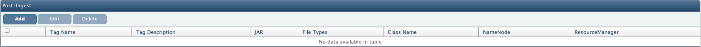
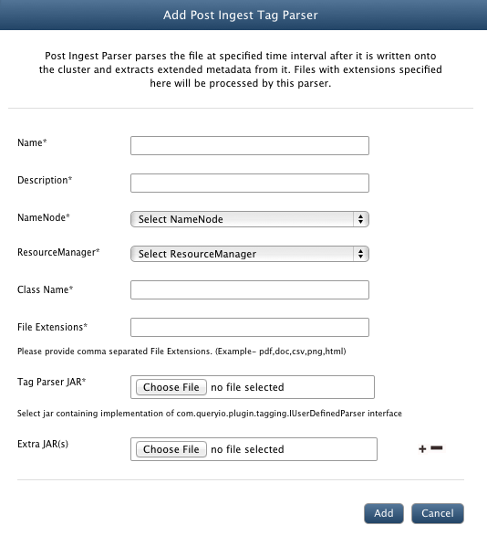

Big data - Post Ingest Tagging
In this chapter
Following details are explained about Post Ingest Tagging:
Description
Post Ingest Parser parses the file at specified time after it is written onto the cluster and extracts extended metadata from it.
Extended metadata refers to the file metadata that is not interpreted by file system. It is used to associated files with some extra information.
Typical usage can be storing the author of a document, the character encoding of a plain-text document, a checksum, or digital signature. These metadata about files are saved in the database.
Add Post Ingest Parser
Use following guidelines to add Post Ingest parser

- Go to Data > Data Tagging.
- Click on Add button in the Post Ingest view to add new Post Ingest parser.
- Name: Enter name for the parser.
- Description: Provide description for the parser.
- NameNode: Select NameNode, data of which will be parsed through post ingest parser.
- ResourceManager: Select ResourceManager to be linked with the post ingest parser.
- Class Name: Provide main class for the parser.
- File Extensions: Provide file extensions that you want to associate with the parser.
- Tag Parser JAR: Click on Choose File to browse and select the Tag Parser JAR file.
- Extra JAR(s): To add any dependent JAR files, if required. You can add number of extra JAR files but Main Class must be of Tag Parser Jar.
- Click on Add to add the parser.
- Now you can schedule to run post ingest tagging using Status > Schedules > Schedule MapReduce Job section or start it directly from MapReduce > Job Manager.

To see how to write your own parser, refer to the developer documentation
Copyright © 2015 QueryIO Corporation. All Rights Reserved.
QueryIO, "Big Data Intelligence" and the QueryIO Logo are trademarks
of QueryIO Corporation. Apache, Hadoop and HDFS are trademarks of The Apache Software Foundation.